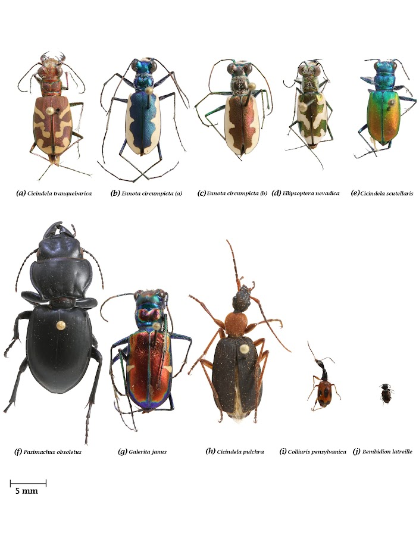
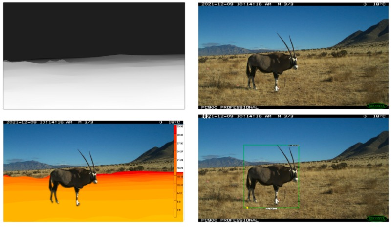
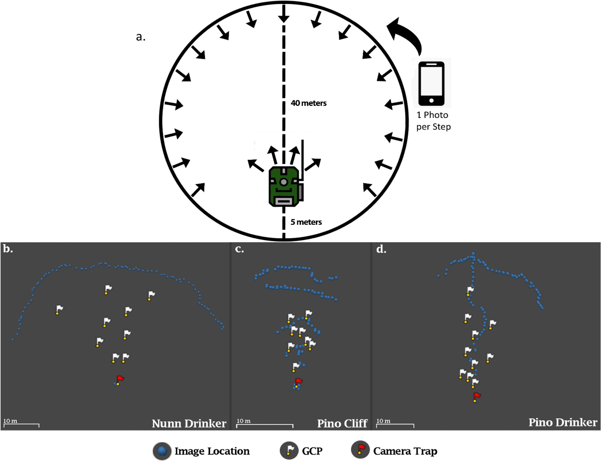
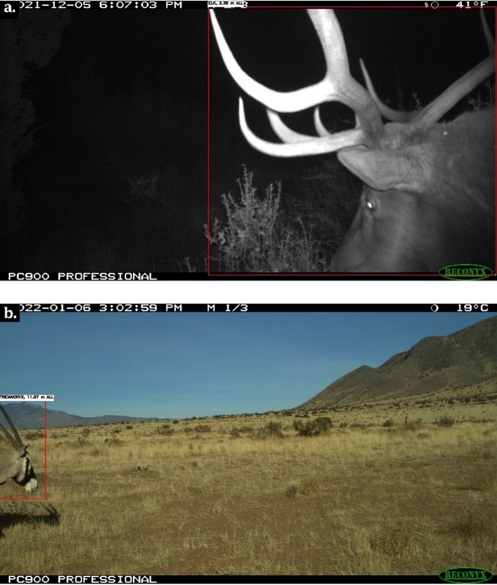
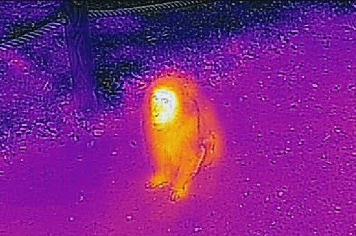
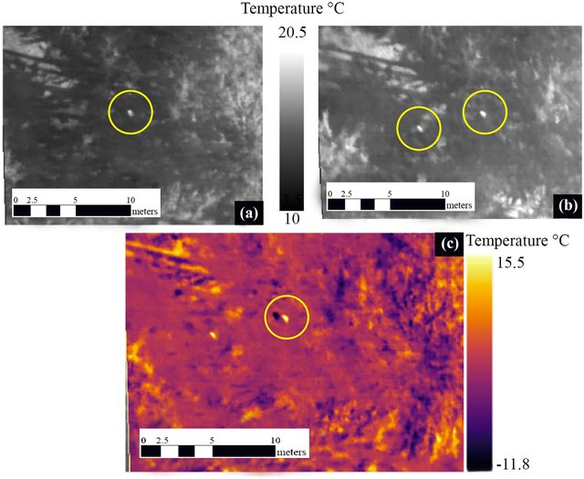
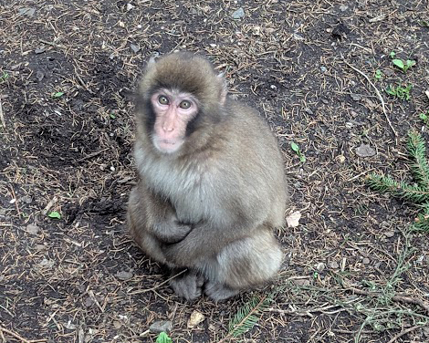

Research Projects



This research explores the use of 3D models generated from museum specimens as synthetic training data for computer vision, with a focus on ground beetles (Carabidae). Using Structure from Motion, a photogrammetric modeling technique, this research seeks to incorporate rare and elusive morphologies into training datasets to improve species identification accuracy. This work focuses on improving biodiversity monitoring and automated species recognition, supporting conservation efforts and ecological studies in remote or challenging environments.
Publications
- Blair Mirka, Christopher Lippitt. Labeled 2D images from 3D models of museum specimens; The impact of Structure from Motion modeling parameters on rendered 2D images. ZooKeys (2025)



This research explores the use of Structure from Motion to create distance estimations for wildlife sightings from camera trap images. When coupled with automated species identification through computer vision, this presents a clear pathway to fully automated distance estimations — a critical step in acquiring animal abundance estimations for repeatable and cost-effective survey data.
Selected Publications



This project investigates the application of unmanned aerial vehicles (UAVs) equipped with thermal imaging sensors to detect primates in densely vegetated tropical forest environments. By leveraging the thermal contrast between warm-bodied animals and their cooler surroundings, this approach offers a promising method for overcoming the visual limitations posed by canopy cover and complex forest structure. The study integrates remote sensing methodologies with photogrammetric techniques to enhance spatial accuracy and detection reliability. High-resolution thermal data are georeferenced and processed to identify potential primate signatures, which are then validated against ground-truthed observations or known locations. Ultimately, the project contributes to the development of more efficient, non-invasive survey techniques for primate conservation and broader biodiversity assessments.